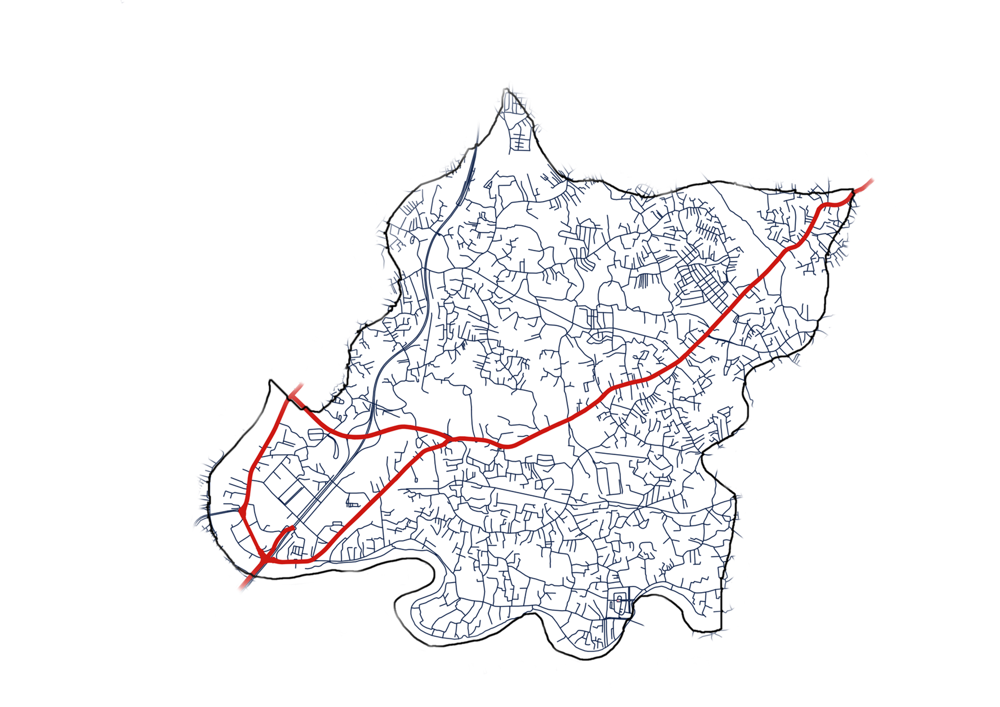

Colombo District · Western Province, Sri Lanka
Sacred ground touched by the Lord Buddha.
Kelaniya is a historic town on the northern bank of the Kelani River, about 10 km east of Colombo fort, western province Sri lanaka, with roots predating 500 BC when it was known as Kalyani Nagar.

 Kelaniya Roadmap
Kelaniya Roadmap
Div. secretariatKelaniya